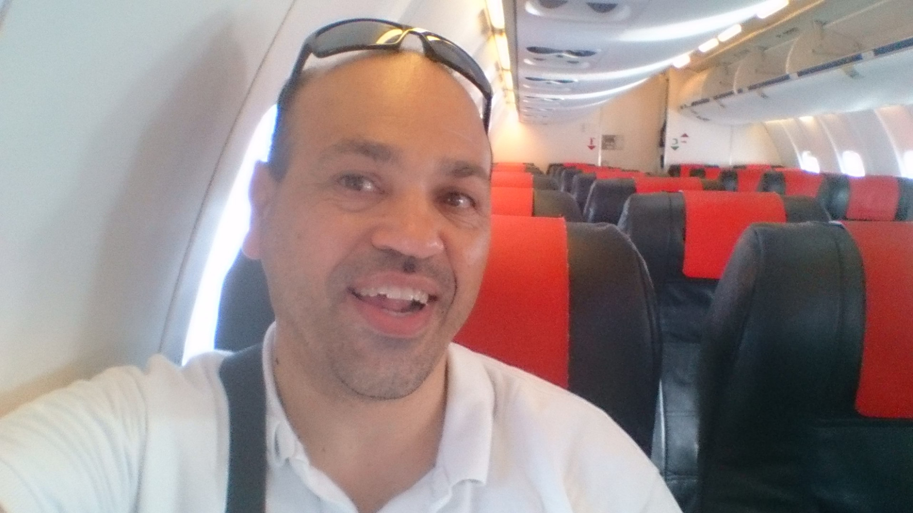

Agrupamento de Escolas D. Sancho II, Alijó
Ponente: Juan José Bonnín Sansó (IES Sa Colomina)
Controles: Flechas ← → · S Vista del orador · F11 Pantalla completa
By the end of this 3-hour workshop, your team will be able to:
usermod -aG) and enforce least-privilege POSIX permissions (750, 640, 644).systemd daemons (apache2, ssh) with syntax validation before reload.ufw (default deny incoming) without locking out SSH.server_report.sh + cron) and resolve multi-layer outages (INC-401).| Block | Duration | Activity | Team Deliverable |
|---|---|---|---|
| 1 | 30 min | Briefing, safety rules & server baseline inspection | Server-Baseline-Record.md |
| 2 | 35 min | Users, groups (webadmins, auditors) & POSIX permissions | Users-Groups-and-Permissions-Record.md |
| 3 | 35 min | systemd lifecycle & ufw host firewall hardening | Service-Management-Record.md |
| 4 | 30 min | Bash health script (server_report.sh) & cron scheduling | Bash-Script-Record.md |
| 5 | 15 min | Break + Instructor fault injection (INC-401) | — |
| 6 | 35 min | Final Management Challenge (INC-401) & debrief | HTTP 200 OK + Incident-Report.md |
root: Work as sysadmin and elevate privilege explicitly with sudo.chmod 777 (or 666): World-writable files or .env secrets incur automatic rubric penalties (-10 pts).ufw disable to Troubleshoot: Open only required ports (22/tcp, 80/tcp) while keeping default-deny active (-10 pts penalty if disabled).sudo ufw allow 22/tcp before enabling ufw.sudo apache2ctl configtest (Syntax OK) before sudo systemctl reload apache2.Know where critical server files live and how to inspect system health:
| Directory | Purpose | Key Inspection Commands |
|---|---|---|
/etc/ | System & service configuration files (ssh, apache2, ufw) | hostnamectl, cat /etc/os-release |
/var/log/ | System journals, auth logs, Apache access/error logs | journalctl -xe, tail -n 30 /var/log/apache2/error.log |
/var/www/html/ | Default public Apache web root (status.html) | ls -la /var/www/html/ |
/srv/ | Site-specific application data (/srv/alijo-portal) | ls -la /srv/alijo-portal/ |
| Network & Load | Interfaces, routes, RAM, disk, and open sockets | ip -br -4 addr, free -h, df -h, sudo ss -tulpn |
sudo groupadd -f webadmins
sudo groupadd -f auditors
sudo usermod -aG webadmins dev_ana # ALWAYS use -aG (append), never -G alone!
sudo usermod -aG auditors audit_rui/srv/alijo-portal)| Path | Owner:Group | Mode | Symbolic | Why |
|---|---|---|---|---|
/srv/alijo-portal | root:webadmins | 750 | drwxr-x--- | x allows traversal (cd) for root & webadmins only |
/srv/alijo-portal/index.html | root:webadmins | 644 | -rw-r--r-- | Publicly readable web asset, writable only by root |
/srv/alijo-portal/.env | root:webadmins | 640 | -rw-r----- | Secrets readable by webadmins, zero access for other |
systemd Service LifecycleManage background daemons cleanly without dropping active user sessions:
# 1. Inspect current state & boot enablement
systemctl status apache2
systemctl is-enabled apache2
# 2. Start now AND enable automatically at boot
sudo systemctl enable --now apache2
# 3. Validate syntax BEFORE applying config changes
sudo apache2ctl configtest # Must return: Syntax OK
sudo systemctl reload apache2 # Graceful reload (zero dropped connections)reload vs. restart: reload re-reads configuration gracefully; restart kills all worker processes and drops active HTTP connections.
ufw)Enforce a default-deny incoming posture while preserving SSH and HTTP access:
# 1. Set baseline policies
sudo ufw default deny incoming
sudo ufw default allow outgoing
# 2. Allow SSH FIRST (anti-lockout!), then HTTP
sudo ufw allow 22/tcp
sudo ufw allow 80/tcp
# 3. Enable and audit numbered rules
sudo ufw --force enable
sudo ufw status numberedcron (server_report.sh)Automate daily server health reporting with strict error handling and exit codes:
#!/usr/bin/env bash
set -u
echo "=== Alijo Server Health Report ($(date -Iseconds)) ==="
echo "Host: $(hostname) | Uptime: $(uptime -p)"
df -h /
free -h
systemctl is-active apache2 ssh07:30 Schedule (crontab -e)chmod 750 Scripts/server_report.sh
./Scripts/server_report.sh && echo "Exit code: $?"
# Crontab entry (runs every day at 07:30):
30 7 * * * /home/sysadmin/Alijo-IT-Workshops/Workshop-4-Linux-Server-Administration/Scripts/server_report.sh >> /var/log/server_health.log 2>&1When an outage hits alijo-srv01, diagnose systematically from bottom to top:
[Layer 5: File Ownership & Permissions] ──▶ ls -la /var/www/html /srv/alijo-portal
[Layer 4: Host Firewall (`ufw`)] ──▶ sudo ufw status numbered
[Layer 3: Listening Sockets] ──▶ sudo ss -tulpn
[Layer 2: Daemon & Logs (`systemd`)] ──▶ systemctl status apache2 | journalctl -xe
[Layer 1: Host Resources] ──▶ df -h | free -hConnection refused on :80 ➔ Service stopped (Layer 2/3).Connection timed out on :80 ➔ Firewall dropping packets (Layer 4).HTTP/1.1 403 Forbidden ➔ File ownership or 600 permissions blocking www-data (Layer 5).INC-401)Following scheduled maintenance on alijo-srv01, monitoring reports a multi-layer outage:
http:///status.html is unreachable externally./srv/alijo-portal/.env and legacy firewall rules.Scripts/server_report.sh fails to execute.curl -i http:///status.html returns HTTP/1.1 200 OK (Alijo Status: Operational)./srv/alijo-portal/.env hardened to 640 (root:webadmins); /var/www/html/status.html set to 644 (root:www-data).ufw active with 23/tcp removed and 80/tcp allowed.Scripts/server_report.sh executable (750) and Worksheets/Incident-Report.md completed with before/after evidence.IT & Vocational Education Teacher (SMX / ASIX) — IES Sa Colomina (Eivissa)
